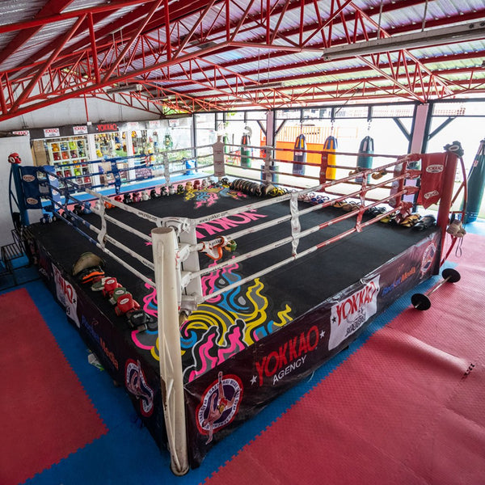
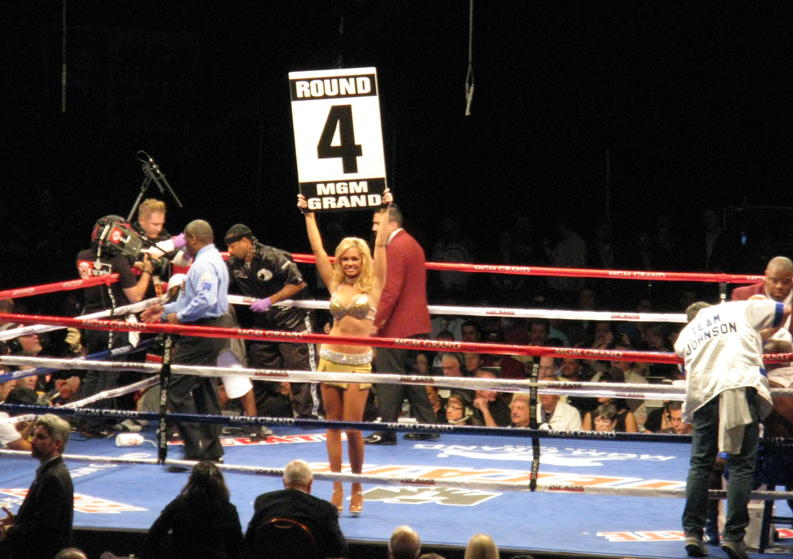
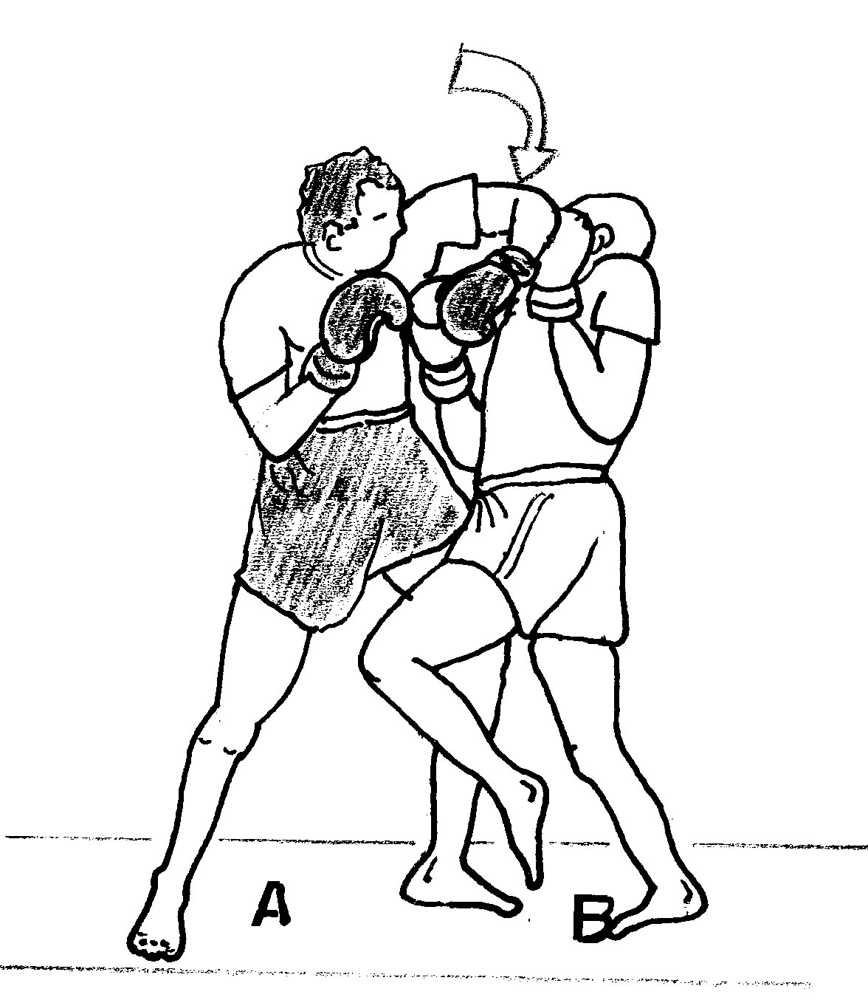

Les Regles du Muay Thai
Le Ring
Les combats de Muay Thaï se déroulent dans un ring carré de 6,10 mètres de côté (20 pieds), entouré de 4 cordes. La surface est rembourrée pour absorber les chocs. Les coins sont colorés (rouge et bleu) pour distinguer les combattants.

Durée des Rounds
Un combat professionnel se compose de 5 rounds de 3 minutes, avec 2 minutes de repos entre chaque round. En amateur, les combats sont généralement de 3 rounds de 2 minutes.

Coups Autorisés
Le Muay Thaï autorise les coups de poings, coudes, genoux et tibias. Les prises sont limitées à 5 secondes. Les coups bas (low kicks) et les balayages sont également permis.

Équipement Obligatoire
Les combattants portent des gants de 8 à 10 oz, un short, un protège-dents, une coquille et des bandages. Les protège-tibias sont obligatoires en amateur. Mongkon (bandeau sacré) est porté avant le combat.
Arbitrage et Notation
Trois juges notent les combattants sur 10 points par round. Les critères incluent les coups efficaces, la domination, les dégâts infligés et la défense. Un KO ou un abandon donne une victoire immédiate. L’arbitre peut intervenir pour avertir, pénaliser ou arrêter un combat en cas de faute grave, de blessure ou de déséquilibre dangereux. L’esprit du Muay Thaï valorise avant tout la maîtrise, la technique et le respect, au-delà de la simple recherche du KO.